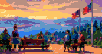

Sandviken → Fløyen
A moving DJ set, walked at the balance point of the year — equal day, equal night. Same route, same six stops, same archive. Come and walk it with us.
Mount Media × Preem Cast
Equal day. Equal night. Walk the balance point of the year.

A moving DJ set, walked at the balance point of the year — equal day, equal night. Same route, same six stops, same archive. Come and walk it with us.
Olav H. Hauge, Litteraturhuset, Østre Skostredet 5, 5017 Bergen, 09:00–15:30.
I'm presenting The Haunting of the Author at 10:30. Everyone's welcome there too — this walk is timed for the weekend right after it.
![QR code to the Trail Mix folklore trail]()